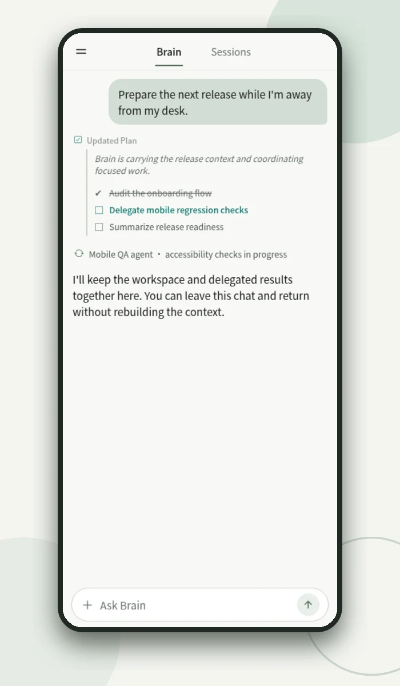
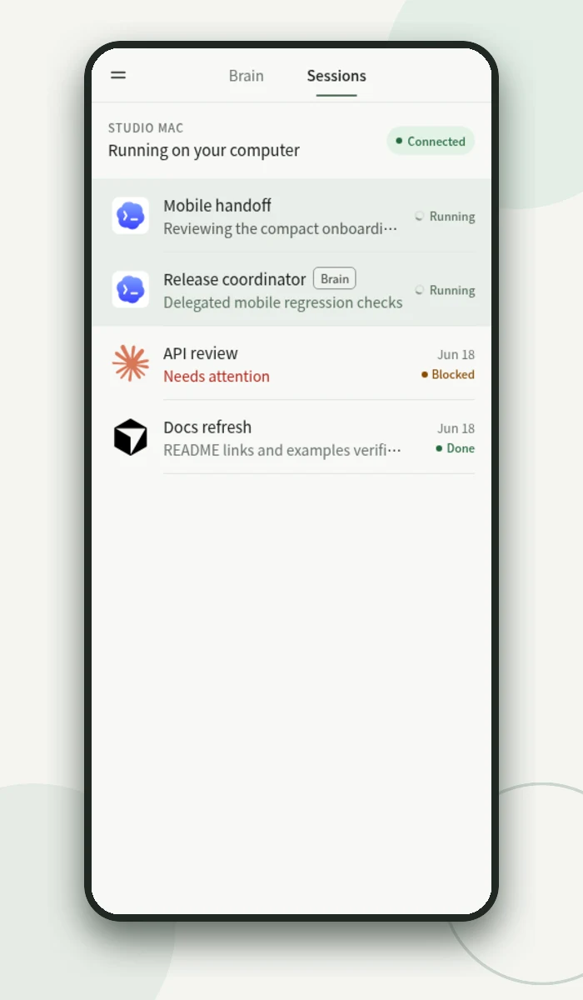
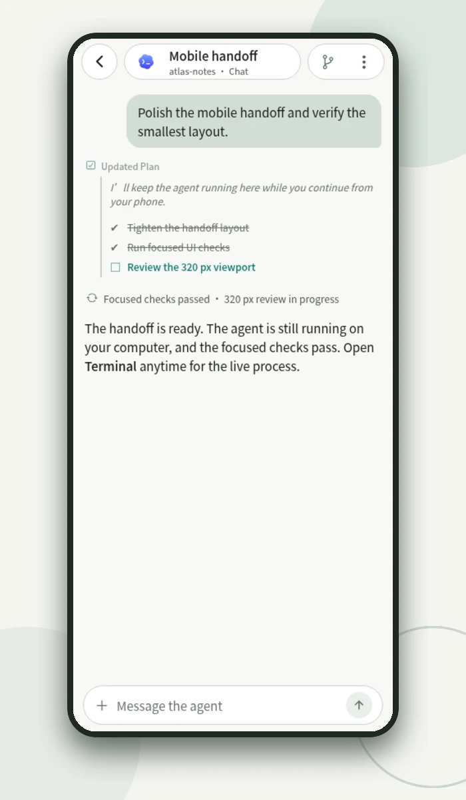

Open source · self-hosted · Android & iOS
Run a crew of coding agents.
Steer it from anywhere.
Zen puts a Brain in charge of your coding agents. It holds the context, splits the goal, hands scoped work to visible Workers — Codex, Claude Code, OpenCode and more — and accepts a result only after reviewing its evidence. Agents run on your own computer. You direct them from your phone.
For people who ship alone and run more agents than they can watch.
Brain
Ship release 0.4
Planning three scoped concerns
-
auth-refactorcodex
queueddiff +128 −41
-
ios-regressionclaude
queued42 checks pass
-
docs-syncopencode
queuedlinks verified
- Plan Brain breaks the goal into scoped Work.
- Delegate Each concern goes to a visible Worker on your chosen agent.
- Execute Workers check in while they run.
- Evidence Results return with diffs, checks and receipts.
- Accept Brain reviews, sends follow-ups, then accepts.
Why Zen is different
-
01
A Brain, not another chat tab.
Brain owns the objective, the plan, scheduling, review and acceptance. Workers execute scoped concerns and never own the plan.
-
02
Work outlives the process.
Work, Attempts and append-only Events live in the daemon. A restart rebuilds the timers. Silence or a clean exit never marks work done.
-
03
Any agent, your hardware.
Six agent CLIs run through tmux beside your repositories; one is enough. Repositories, credentials and state stay on your host. The phone sees what you open; providers see what agents send.
Brain
The Brain holds the thread.
You state the goal and the boundaries once. Brain carries them across chats, devices and restarts, and moves to the next runnable concern without waiting for you to type continue
.
- Context
- A private workspace for memory, profile, current focus and worklogs.
- Planning
- Decomposes and orders the goal, then picks or reuses a Session for each concern.
- Lifecycle
- Owns every Work item from creation to done or cancelled.
- Review
- Reads Worker results, transcripts and diffs before deciding what happens next.
- Acceptance
- Only Brain or you can close Work. Worker reports are inputs, not verdicts.


Workers
Delegation you can watch.
A Zen Worker is a named tmux Session running an agent CLI. It shows up in Sessions like anything else you started, so you can read it, interrupt it or finish it yourself. Brain drives Workers through the same CLI you can use:
# spawn a visible Worker on a chosen agent
$ zen worker spawn -name "iOS regression" -executor claude \
-cwd ~/repo -prompt "Run the regression suite and report failures"
# the Worker reports progress against its exact turn
$ zen worker progress --status running --phase verifying \
--attention none --summary "38 of 42 checks green"
# read what it did, and whether your input really landed
$ zen worker capture -id zen-worker-ios-regression:@1 --json
$ zen worker receipt -id zen-worker-ios-regression:@1 --work-id w_19
# continue the same Session, or accept the Work
$ zen worker send -id zen-worker-ios-regression:@1 --work-id w_19 -text "Fix the two flaky cases"
$ zen brain work update -id w_19 -status doneAgent clients
Switch agents, keep the workflow.
Zen is agent-neutral. New Workers run on your default delegated executor, or on the one you ask Brain for. Change the default live, without a restart. A running Worker keeps the agent it started with.
- Refactor session authdefault
- Draft onboarding copy“use claude”
- Bisect flaky testdefault
- Port parser to Go“use grok”
Brain
default: codexcodexCodexdefaultclaudeClaude Codecursor-agentCursorgrokGrok CLIpiPiopencodeOpenCode
zen brain set-delegated changes the default for Workers spawned afterward; existing Workers keep theirs.zen brain use claudeSwitch the agent that runs Brain itself.zen brain set-delegated grokChange the default for new Workers, live.~/.zen/executors.tomlAdd custom executors or safer command profiles.Work state
State that survives the night.
Long tasks break: a laptop sleeps, a provider drops, the daemon updates. Zen keeps one durable record per Work, in one transactional store. Process state, panes and transcripts are evidence. They are never the source of truth.
- One active Attempt per Work, bound to an exact
(session, turn, fence). Stale turns are rejected. - Check-ins renew a lease. A Worker that goes quiet past its grace period becomes a loss decision for Brain, never a fake success.
- Wakes are durable. After a restart, the daemon rebuilds its timers and delivers what is due.
Work w_19ios-regression
- createdObjective and completion policy recorded
- attemptWorker spawned on
claude· fence 1 - progressverifying · 38 of 42 checks green
- daemon restarted · timers rebuilt from durable state
- result2 flaky failures, logs attached
- attemptBrain sends follow-up · fence 2
- result42 of 42 green, diff +19 −6
- acceptedBrain reviewed evidence and closed Work

Remote control
Leave the desk. Keep the session.
Follow an agent in structured Chat: messages, tool calls, plans. When you need the raw process, switch to the live Terminal of the same tmux session and take over. Review the repository in Git Diff. Hand it back when you are done.
- Your network, your origin. Pair over trusted LAN, Tailscale, Cloudflare Tunnel or a reverse proxy.
- Signed devices. The daemon holds an Ed25519 identity. Phones enroll once, then every request is signed. Revoke with
zen devices revoke. - One current server. Every screen in the app follows a single server. Switching servers never mixes their data.
Audit
Every result arrives with its receipts.
progressPhase, attention and structured evidence from each Worker, bound to its turn.
captureThe Worker's transcript, readable by Brain and by you.
receiptExact proof of whether an input was accepted. Nothing is resubmitted to check.
git diffReview a Session's repository on your phone, read-only.
eventsAn append-only trail per Work, from creation to acceptance.
statsUsage per model from your own daemon. An unknown price is shown as unknown, not as free.
Get started
Running in a few minutes.
You need Linux (amd64 or arm64), WSL, or an Apple Silicon Mac, with tmux and at least one authenticated agent CLI.
-
Install the daemon
curl -fsSL https://raw.githubusercontent.com/daoleno/zen/main/install.sh | shVerifies the release checksum. Never uses sudo, installs agent CLIs, or sends telemetry.
-
Check the host and start
zen doctor && zen --lanThen run the exact
zen paircommand it prints, orzen pair https://your-originfor a tunnel. -
Pair your phone
Android: the arm64 APK from GitHub Releases. iOS: build from source; a TestFlight preview is awaiting Apple review. Scan the pairing code, then open Brain.